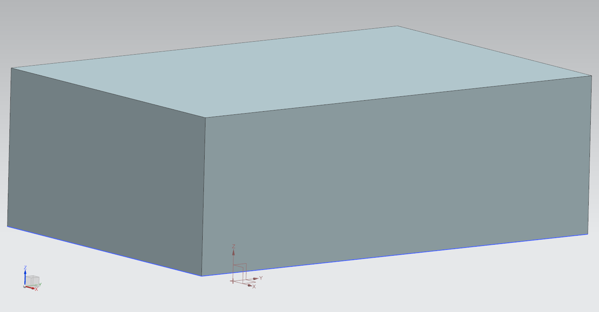

ANSI C <<
Previous Next >> w10~14
NX API
1.把路徑改成自想要的路徑
# nx_open_part.py
# 導入 NXOpen
import NXOpen
import NXOpen.UF
import NXOpen.Gateway
def main():
# 取得目前開啟的工作階段
theSession = NXOpen.Session.GetSession()
theUfSession = NXOpen.UF.UFSession.GetUFSession()
# 建立 ListingWindow
listWin= theSession.ListingWindow
# 開啟零件檔案
basePart1 = theSession.Parts.OpenBaseDisplay("y:/tmp/block.prt")
workPart = theSession.Parts.Work
unit1 = workPart.UnitCollection.FindObject("MilliMeter")
# height
p7 = workPart.Expressions.FindObject("p7")
# width
p8 = workPart.Expressions.FindObject("p8")
# length
p9 = workPart.Expressions.FindObject("p9")
workPart.Expressions.EditWithUnits(p7, unit1, "30")
workPart.Expressions.EditWithUnits(p8, unit1, "60")
workPart.Expressions.EditWithUnits(p9, unit1, "90")
theSession.UpdateManager.DoUpdate(0)
#saveStatus1 = workPart.SaveAs("y:/tmp/block_new.prt")
#saveStatus1.Dispose()
# initialize list to hold bodies
theBodyTags = []
for x in workPart.Bodies:
if x.IsSolidBody:
theBodyTags.append(x.Tag)
# 準備輸出 ASCII 格式 STL 零件檔案
sTLCreator1 = theSession.DexManager.CreateStlCreator()
sTLCreator1.AutoNormalGen = True
sTLCreator1.ChordalTol = 0.08
sTLCreator1.AdjacencyTol = 0.08
sTLCreator1.OutputFile = "y:\\tmp\\block_ascii.stl"
# Binary STL: NXOpen.STLCreatorOutputTypeEnum.Binary
sTLCreator1.OutputType = NXOpen.STLCreatorOutputTypeEnum.Text
# 已知 body1 命名
body1 = workPart.Bodies.FindObject("EXTRUDE(2)")
added1 = sTLCreator1.ExportSelectionBlock.Add(body1)
nXObject1 = sTLCreator1.Commit()
sTLCreator1.Destroy()
# 開啟所建立的 ListingWindow
listWin.Open()
listWin.WriteLine("number of solid bodies: " + str(len(theBodyTags)))
(massProps, Stats) = theUfSession.Modeling.AskMassProps3d(theBodyTags, len(theBodyTags), 1, 4, .03, 1, [0.99,0.0,0.0,0.0,0.0,0.0,0.0,0.0,0.0,0.0,0.0])
listWin.WriteLine("units: kg, mm")
listWin.WriteLine("surface area: " + str(massProps[0]))
listWin.WriteLine("volume: " + str(massProps[1]*1E9))
# 在 ListingWindow 中寫入字串
listWin.WriteLine("Hello, NXOpen")
listWin.Close()
# 將零件檔案 fit 之後, export 出 png 檔案
theUI = NXOpen.UI.GetUI()
imageExportBuilder1 = theUI.CreateImageExportBuilder()
custombackgroundcolor1 = [None] * 3
custombackgroundcolor1[0] = 1.0
custombackgroundcolor1[1] = 1.0
custombackgroundcolor1[2] = 1.0
imageExportBuilder1.SetCustomBackgroundColor(custombackgroundcolor1)
imageExportBuilder1.FileFormat = NXOpen.Gateway.ImageExportBuilder.FileFormats.Png
imageExportBuilder1.FileName = "y:\\tmp\\block.png"
imageExportBuilder1.BackgroundOption = NXOpen.Gateway.ImageExportBuilder.BackgroundOptions.Original
imageExportBuilder1.EnhanceEdges = False
imageExportBuilder1.RegionMode = False
# fit view 後 commit export png
workPart.ModelingViews.WorkView.Fit()
nXObject6 = imageExportBuilder1.Commit()
imageExportBuilder1.Destroy()
if __name__ == "__main__":
main()
2.開啟NX隨身版，找到journal後Play程式，得到以下檔案

檔案
ANSI C <<
Previous Next >> w10~14